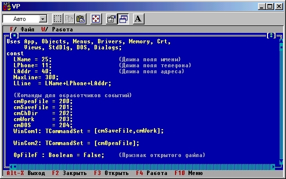

|
|
|
|
Использование коллекций
Для вывода текста мы использовали глобальный массив Lines. Как известно, длина любого массива в Турбо Паскале не может превышать длину сегмента данных (64 Кбайт). Это ограничение можно убрать, если воспользоваться еще одним механизмом Turbo Vision - коллекциями. Подобно массивам, коллекции представляют собой набор элементов, в которых можно хранить любые данные, включая экземпляры любых объектов. К элементам коллекции можно обращаться по индексу, однако, в отличие от массива, коллекция размещается в куче, поэтому ее суммарная длина ограничивается всей доступной памятью и может быть больше 64 Кбайт. Кроме того, размер коллекции не лимитируется при ее создании и может динамически изменяться в процессе работы программы.

Рис.15.8. Окно с текстом программы.
Коллекции обладают целым рядом новых свойств. В частности, к любой коллекции можно применить метод ForEach, который осуществит заданные Вами действия над каждым элементом коллекции. Таким способом можно, например, быстро отыскать элемент, удовлетворяющий заданным требованиям. Наконец, в Turbo Vision определены отсортированные коллекции, элементы которых упорядочиваются по заданному ключу. Все это делает коллекции более предпочтительным способом хранения данных, чем массивы Турбо Паскаля.
Попробуем заменить массив Lines на отсортированную коллекцию. Введем в объект TInterior новое поле PS:
type
TInterior = object (TScroller)
PS: PStringCollection;
.......
end;
Тип PStringCollection в Turbo Vision определен как указатель на экземпляр объекта TStringCollection, представляющий собой отсортированную коллекцию строк. Сортировка строк осуществляется по обычным правилам сравнения строк по ASCII-кодам. Если вновь помещаемая строка уже существует в коллекции, она не дублируется (при желании программист может разрешить дублирование одинаковых строк), поэтому в общем случае количество элементов коллекции может оказаться меньшим количества помещенных в нее строк.
Для создания коллекции удалите ненужные теперь глобальные объявления MaxLine, Lines и NLines (в коллекции есть другие средства доступа к элементам) и измените метод ReadFile следующим образом :
Procedure TInterior.ReadFile;
var
.....
begin
PS := New(PStringCollection, Init(100,10));
s := copy(ParamStr(0),1,pos('.',ParamStr(0)))+'pas';
assign(f,s);
reset (f); {Открыть файл с текстом программы}
while not (EOF(f) or LowMemory) do
begin
ReadLn(f,s);
if s <> ' ' then PS.Insert(NewStr(s))
end;
Close(f);
exit;
Seek(DataFile,0);
while not (EOF(DataFile) or
LowMemory) do
begin
Read(DataFile, data);
with data do
begin
end;
if s<>''then PS.Insert(NewStr(s))
end;
end; {ReadFile}
В приведенном фрагменте мы предусмотрительно изменили только ту часть программы, которая стоит после оператора Exit и которая зависит от удаленных глобальных определений. Вы должны сделать эти изменения (они все равно нам пригодятся) или закомментировать эту часть текста, чтобы получить синтаксически правильный вариант программы.
С помощью оператора
PS := New(PStringCollection, Init(100,10));
инициируется экземпляр коллекции, причем параметр 100 определяет начальный размер коллекции, а параметр 10 - шаг наращивания коллекции, если ее размер превысит 100 элементов. Оператор
if s<> ' ' then PS.Insert(NewStr(s))
вставляет очередную непустую строку в коллекцию. Заметим, что коллекции РЗЛ передается не строка 5, а лишь указатель на нее, т.к. функция NewStr размещает строку в куче и возвращает ее адрес. Функция NewStr не может разместить в куче пустую строку, поэтому мы вставляем в коллекцию только непустые строки.
Функция LowMemory используется для контроля за размерами динамической памяти: она возвращает значение True, если в куче осталось менее 4 Кбайт.
В последний оператор метода Interior.Init внесите следующее изменение:
Constructor TInterior.Init(var Bounds: TRect; HS,VS: PScrollBar);
begin
SetLimit(LLine,PSA.Count)
end; {TInterior.Init}
Другим станет также и реализация метода TInterior.Draw:
Procedure TInterior.Draw;
var
n,k: Integer;
B: TDrawBuffer;
p: PString;
Color: Byte;
begin
Color := GetColor(1);
for n := 0 to pred(Size.Y) do
begin
k := Delta.Y+n;
MoveChar(B,' ',Color,Size.X);
if k < pred(PS.Count) then
begin
p := PS.At(k);
MoveStr(B,Copy(р,Delta.X+1,Size.X),Color)
end;
WriteLine(0,N,Size.X,1,B)
end
end; {TInterior.Draw}
Элементы коллекции нумеруются, начиная с номера 0. Длина коллекции (общее количество ее элементов) хранится в поле PS. Count. Функция PS.At(k) возвращает указатель на k-й элемент коллекции.
Созданная коллекция размещается в динамической памяти, поэтому после использования ее следует удалить из кучи. Для этого перекроем стандартный деструктор Done:
type
TInterior = object (TScroller)
.......
Destructor Done; Virtual;
end;
Destructor TInterior.Done;
begin
Dispose(PS, Done); {Удаляем коллекцию}
Inherited Done {Выполняем стандартный деструктор}
end;
Еще раз хочу обратить Ваше внимание на особенность программирования в среде Turbo Vision: Вы определяете метод, но не указываете, когда он должен быть выполнен. Правильно сконструированный объект уже «знает», когда он ему понадобится! Так было в случае правила Draw, так же обстоит дело и с деструктором Done: обработчик событий окна TWindow вызовет этот метод, как только он получит событие cmCancel (закрыть окно). Чтобы убедиться в этом, установите контрольную точку в строке
Dispose(PS, Done); {Удаляем коллекцию}
и запустите программу. Останов в контрольной точке произойдет только в том случае, если Вы загрузите окно с текстом и попытаетесь выйти из программы. Если из программы выйти сразу после ее запуска, контрольная точка не сработает.
Вид экрана с окном просмотра отсортированного файла показан на рис. 15.9.

Puc.15.9. Окно с отсортированным тестом программы
|
|
|
|